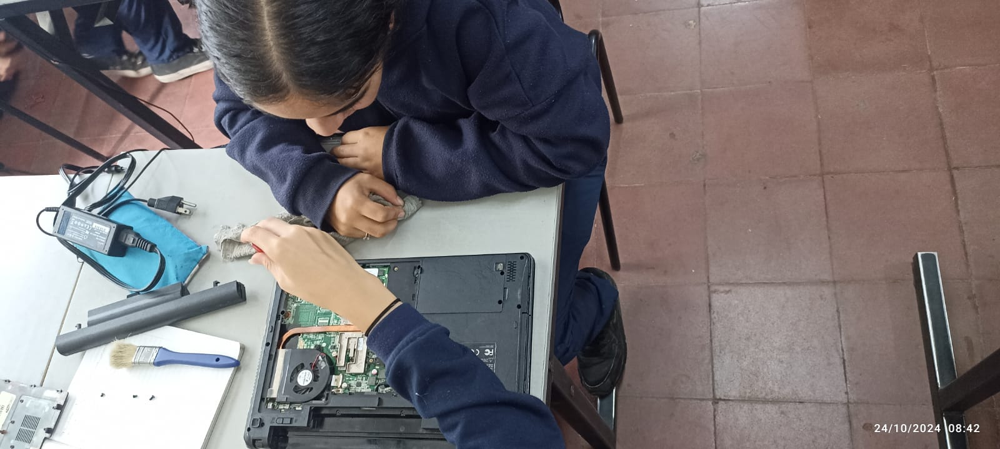
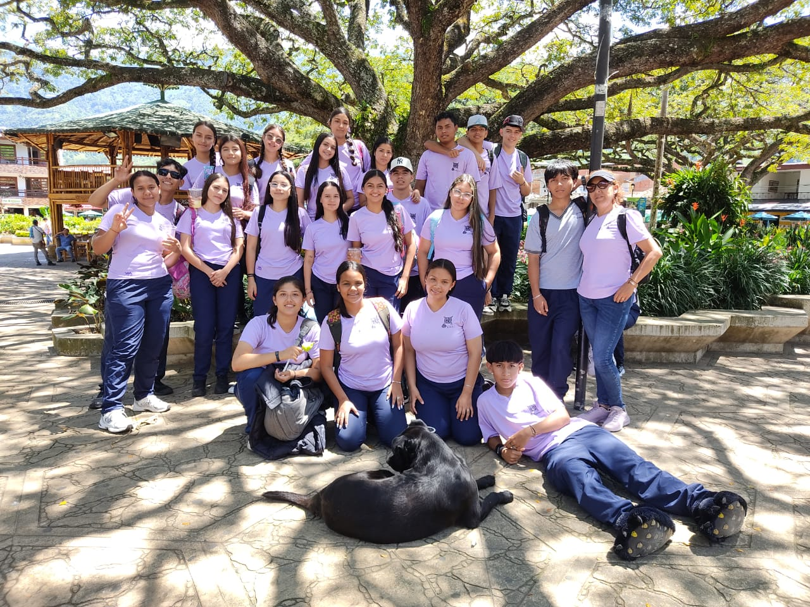
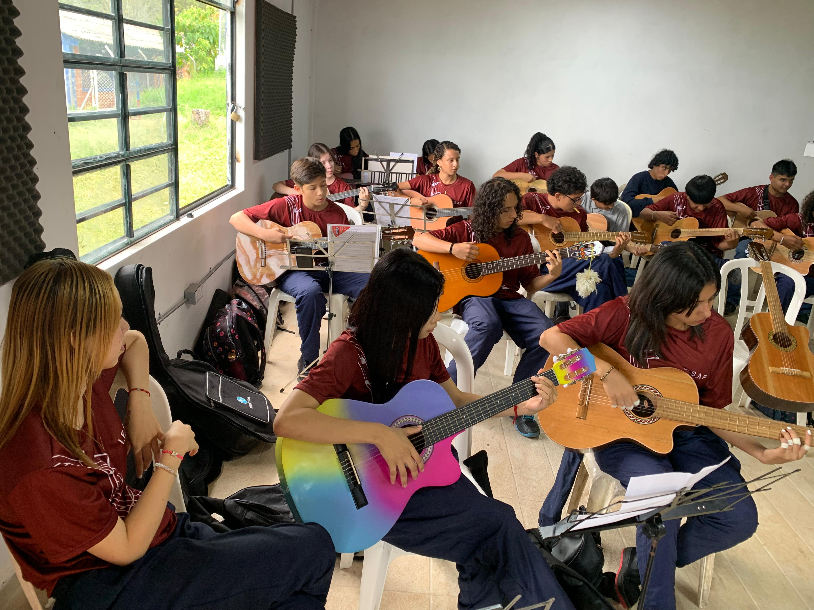

El Técnico en Sistemas de la Institución Educativa San Antonio de Padua (IESAP) se forma con competencias integrales que lo preparan para enfrentar los retos del mundo laboral y social. Adquiere habilidades en emprendimiento, comunicación eficaz, razonamiento matemático y manejo de herramientas informáticas. Además, desarrolla competencias en inglés según el Marco Común Europeo, aplica prácticas de seguridad y salud en el trabajo, y promueve la protección ambiental. Este técnico se destaca por su capacidad para interactuar éticamente en diversos contextos productivos y sociales, contribuyendo a la construcción de una cultura de paz y convivencia.
Para mayor información, puedes contactar a los docentes pares, Eduar Calle y Héctor Henry Román, a través de los correos electrónicos eduar.calle@gmail.com y hectorhry@gmail.com. También puedes comunicarte con el docente del SENA, José Andrés Ramírez Cardona, al correo jarcardona2023@gmail.com.

El Técnico en Turismo de la Institución Educativa San Antonio de Padua (IESAP) se prepara con una formación completa que abarca desde el emprendimiento y la gestión empresarial, hasta la aplicación de prácticas de protección ambiental y seguridad laboral. Con habilidades en comunicación efectiva, razonamiento matemático y manejo de herramientas informáticas, este técnico está listo para enfrentar los desafíos del sector turístico. Además, su formación incluye el dominio del inglés para entornos laborales, así como una sólida base en principios éticos y de paz, contribuyendo al desarrollo de entornos productivos y sociales sostenibles.
Para mayor información, puedes contactar a los docentes pares, Monica Maria Velasquez y Patricia Patiño, a través del correo electrónico iesap.turismo@gmail.com.

El Técnico en Música de la Institución Educativa San Antonio de Padua (IESAP) recibe una formación integral que le permite desarrollarse tanto en el ámbito musical como en competencias generales. Aprenden a generar hábitos saludables, gestionar información utilizando herramientas tecnológicas, y aplicar técnicas de expresión corporal para mejorar su desempeño. Además, desarrollan habilidades de comunicación efectiva y pensamiento crítico para resolver problemas productivos y sociales. Su formación incluye la comprensión y uso del inglés técnico, principios de preservación ambiental y derechos laborales, garantizando una formación ética, integral y orientada hacia el desarrollo sostenible.
Para mayor información, puedes contactar a los docentes pares, Danilo Vivares y Alonso Jara, a través de los correos electrónicos danilovivaresb@gmail.com y alonjaraho@gmail.com. También puedes comunicarte con el docente del SENA, Andrés Correa Mena, al correo ancorrea@sena.edu.co
